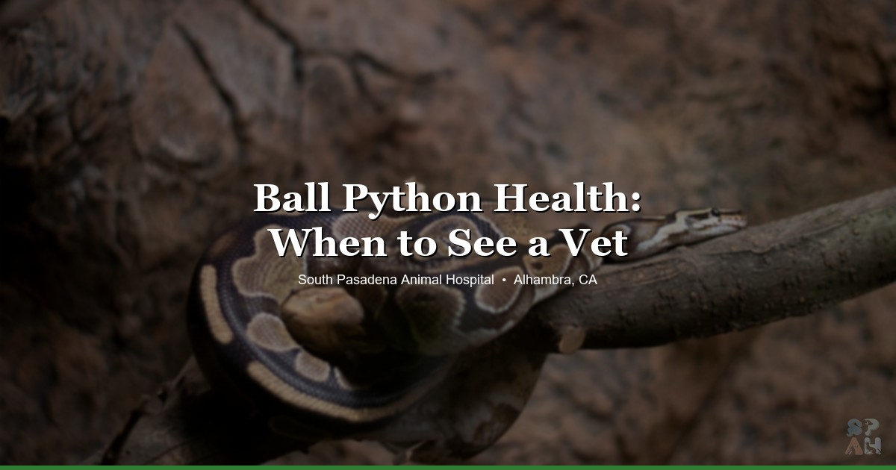

April 2, 2026 · 8 min read
🐍 Ball Python Health Issues: Signs Your Snake Needs a Vet

Ball pythons are one of the most popular pet snakes out there, and honestly, for good reason. They're generally pretty docile, they stay a manageable size, and they've got that whole "puppy dog face" thing going on. But here's something a lot of new owners don't think about: snakes need vet care too.
We see ball pythons regularly at South Pasadena Animal Hospital, and the overwhelming majority of problems we diagnose come down to husbandry. Temps off by a few degrees, humidity that's been wrong for months, substrate that shouldn't be in there — that kind of thing. The snake's been slowly getting sicker, and the owner had no idea because ball pythons are really, really good at hiding it.
So let's go through the stuff we actually see in clinic. What's normal, what's not, and when you should stop Googling and just bring them in.
1. Not Eating — The #1 Ball Python Concern
This is, hands down, the most common call we get about ball pythons. "My snake hasn't eaten in three weeks, is it dying?" And usually the answer is... no. It's just being a ball python.
These guys are notoriously picky eaters. They'll go off food for all kinds of reasons that have nothing to do with illness:
- It's winter. Ball pythons often eat less or stop entirely from about November through February. Totally normal.
- They're in shed. Most won't eat when they're getting ready to shed. Their vision goes cloudy, they feel vulnerable, food isn't interesting.
- You just got them. New environment stress can suppress appetite for weeks. Sometimes a month or more.
- Breeding season. Males especially will fast during breeding season even if there's no female anywhere near them.
Here's the common mistake we see: panicking after two weeks. Two weeks is nothing for a ball python. Healthy adults can go months without eating and be perfectly fine. We've had owners come in frantic at the three-week mark, and their snake's body condition is great.
When you should actually worry:
- It's been several months AND you're noticing weight loss — the spine is getting visible, the body's losing that round cross-section
- The food refusal came with other symptoms — wheezing, mouth discharge, lethargy
- You've tried everything reasonable (different prey size, different color rat, warming the prey, offering at night, leaving it in the enclosure) and nothing's working over a long stretch
A healthy ball python that's just being stubborn looks alert, flicks its tongue, moves around the enclosure at night, and maintains its weight. A sick one looks... different. You'll know.
2. Respiratory Infections
This is the big one. Respiratory infections are probably the most serious common illness we treat in ball pythons, and they can go south fast if you ignore them.
What to watch for:
- Wheezing or crackling when they breathe — hold the snake up near your ear if you're not sure
- Mouth gaping — a ball python sitting with its mouth open is not normal. Ever.
- Mucus or bubbles around the nostrils or mouth
- Stargazing — holding the head up at a weird angle, almost like they're looking at the ceiling
- Excess saliva or stringy discharge
Nine times out of ten, the cause is environmental. Too-cold temps on the warm side, too-high humidity without adequate ventilation, or both. Ball pythons need warmth and humidity, but they also need airflow. A stagnant, damp enclosure is basically a bacteria incubator.
Don't try to wait this one out. Reptile respiratory infections don't resolve on their own. They need antibiotics, and sometimes we need to do a culture to figure out which ones. Bumping up the ambient temperature a couple degrees can help support recovery, but it's not a substitute for treatment. If you're hearing wheezing, come in.
3. Stuck Shed and Retained Eye Caps
Ball pythons should shed in one clean piece. When they don't — when the shed comes off in patches or bits of old skin stay stuck — that's called a bad shed, and it almost always means your humidity is too low.
The body shed is one thing. Usually you can address that with a humidity bump and maybe a damp hide. But here's the thing people miss: retained eye caps.
Ball pythons don't have eyelids. They have a clear scale over each eye called a spectacle, and it's supposed to come off with the rest of the shed. When it doesn't, you get retained spectacles — and this is one of the more common issues we see. The eyes will look cloudy or dull after a shed instead of clear. Sometimes there are multiple layers of old caps built up from several bad sheds in a row.
Here's what we tell every owner: do not try to pull them off yourself. Seriously. People watch YouTube videos and try to peel retained eye caps with tape or tweezers, and they end up damaging the actual eye underneath. We can remove them safely in clinic — it takes a few minutes and it's way less risky than DIY.
If your ball python is consistently having bad sheds, the fix is almost always humidity. You want 60–70% ambient, and higher in the hide during active shedding. A humid hide with damp sphagnum moss works great.
4. Snake Mites
Mites are more common than most people realize, and once you've got them, they're a pain to get rid of.
They're tiny — about the size of a pinhead — and they're usually black or dark reddish-brown. You'll often spot them around the eyes, under the chin, or in the heat pits. Sometimes the first clue is finding your ball python soaking in the water bowl more than usual. That's actually them trying to drown the mites.
Other signs:
- Rubbing against rough surfaces in the enclosure
- Tiny moving dots on your hands after handling
- Small black specks in the water bowl
- Restlessness, excessive movement
Mites can come from pet stores, reptile expos, or even cross-contamination if you handle someone else's snake. They reproduce fast and they'll spread to other reptiles in your home if you're not careful. Treatment involves treating the snake AND the enclosure AND repeating the process to catch the next generation. We can walk you through the protocol or handle it in clinic.
5. Mouth Rot (Stomatitis)
Mouth rot sounds dramatic, and honestly, it kind of is. It's a bacterial infection of the mouth and gums, and it's usually not the primary problem — it's secondary to something else. Meaning: your snake was already immunocompromised from bad husbandry, stress, or another illness, and the mouth infection piled on.
What it looks like:
- Swelling around the mouth or jaw
- Cheesy, yellowish discharge or "cottage cheese" material along the gum line
- Reluctance to eat (because it hurts)
- Drooling or excessive saliva
- Redness or petechia (tiny red spots) in the mouth tissue
This needs vet treatment. We'll clean the mouth, start antibiotics, and — just as importantly — figure out what's going on underneath. If we just treat the stomatitis without addressing the root cause, it'll come back.
6. Scale Rot
Scale rot is basically a skin infection, and you'll usually see it on the belly first. Look for:
- Brown or reddish discoloration on the ventral (belly) scales
- Blisters or raised areas
- Scales that look pitted, eroded, or are starting to lift
The cause? Almost always the enclosure is too wet, too dirty, or both. Substrate that stays damp, a water bowl that keeps overflowing, spot cleaning that isn't happening often enough. Ball pythons need humidity, but they shouldn't be sitting in wet substrate. There's a difference between humid air and a soggy floor.
Mild cases can sometimes be managed with a husbandry overhaul and some topical treatment. More advanced cases need systemic antibiotics. If you're seeing blisters or the discoloration is spreading, don't wait on it.
7. Inclusion Body Disease (IBD)
This one's worth knowing about even though it's less common, because it's serious and there's no treatment for it.
IBD is a viral disease that primarily affects boas and pythons. It attacks the nervous system, and the classic presentation is:
- Stargazing — the snake holds its head up and back in an unnatural position, like it's staring at the ceiling
- Inability to right itself — if you flip the snake upside down, it can't turn back over
- Corkscrewing — twisting the body in a corkscrew pattern
- Chronic respiratory infections that don't respond to treatment
- Regurgitation
IBD is thought to be spread through snake mites, which is another reason mite prevention matters. If we suspect IBD, we'll discuss testing options with you. It's a hard conversation to have, but it's important to know about — especially if you have other snakes in the home, because it is contagious between reptiles.
8. Regurgitation
Regurgitation is different from not eating, and it's always worth paying attention to. A ball python that throws up its meal is telling you something's wrong.
Common causes:
- Handling too soon after feeding. This is the most common one we see. You need to leave them completely alone for at least 48–72 hours after they eat. No handling, no moving the enclosure, no loud disturbances nearby.
- Temps too low. Digestion in snakes is entirely temperature-dependent. If the warm side drops below 88°F, they literally can't digest properly. The food sits there and eventually comes back up.
- Prey too large. General rule: the prey item should be about 1–1.5 times the width of the snake's body at its widest point. Bigger than that and you're asking for trouble.
- Stress. Too much activity around the enclosure, other pets bothering them, a hide that's too big so they don't feel secure.
One regurgitation with an obvious cause (you handled them the next day, okay, lesson learned) isn't necessarily an emergency. But repeated regurgitation is serious. It strips the esophageal lining and creates a cycle that's hard to break. If it happens more than once, come in.
9. Husbandry: Where Most Problems Actually Start
We could've put this section first, honestly, because it's the root cause of probably 80% of the health issues we see in ball pythons. Get the enclosure right and you'll avoid most of the problems on this list.
Here's what we recommend:
- Warm side: 88–92°F. Use a thermostat. Always. Unregulated heat sources cause burns and temperature swings.
- Cool side: 76–80°F
- Humidity: 60–70% ambient. Higher in the humid hide.
- At least two hides — one on the warm side, one on the cool side. They should be snug. Ball pythons want to feel walls touching their body on all sides. An oversized hide is basically useless.
- Fresh water in a bowl big enough to soak in, changed frequently
- Substrate that holds humidity without staying soggy — coconut husk, cypress mulch, or a mix
Here in the San Gabriel Valley, outdoor temps fluctuate a lot between seasons. We see a wave of respiratory infections every winter when the temps drop and people's enclosures cool down more than they realize. If you don't have a thermostat with a probe on the warm side, get one. Cheap thermostats pay for themselves in vet bills you won't have to deal with.
10. When to Come In vs. When to Monitor
Come in soon (within a day or two):
- Any wheezing, mouth gaping, or mucus — respiratory infections don't wait
- Mouth rot signs — swelling, discharge, redness in the mouth
- Prolapse — tissue coming out of the vent. Keep it moist and get in ASAP.
- Burns — from unregulated heat mats or bulbs without thermostats
- Repeated regurgitation
- Neurological signs — stargazing, corkscrewing, inability to right
Monitor at home first (but come in if it doesn't improve):
- Not eating — if body condition is good and there are no other symptoms, give it a few weeks. Check husbandry first.
- One bad shed — bump humidity, add a humid hide, see if the next shed improves. But check for retained eye caps.
- Mild scale discoloration on the belly — clean the enclosure, fix the substrate situation, and watch. If it's spreading or blistering, come in.
- Single regurgitation with an obvious cause — fix the cause, wait two weeks before offering food again (start with a smaller prey item)
When in doubt, you can always call us. A quick phone conversation can save you a trip or tell you it's time to come in. That's what we're here for.
Take Care of the Basics and They'll Do the Rest
Ball pythons are honestly pretty hardy animals when their environment is dialed in. Most of the health problems on this list are preventable, and the ones that aren't are treatable if you catch them early enough. Don't skip annual checkups just because your snake "seems fine" — remember, these guys are wired to hide illness. A hands-on exam catches things you can't see from outside the glass.
We see ball pythons and other reptiles regularly at our Alhambra clinic. If something seems off with your snake — or if you just want a wellness check and some husbandry advice — we're happy to help. You can check our pricing page for exam costs before you come in.